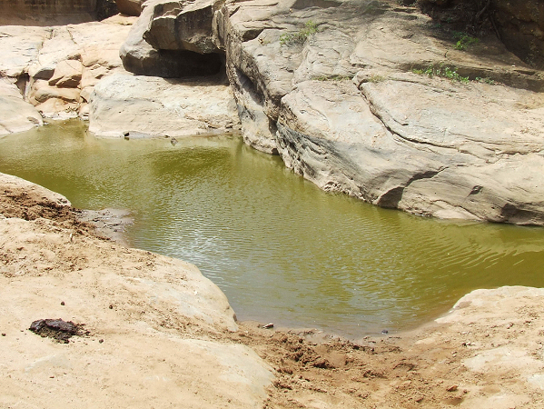

You drink the brown water. It quenches your thirst but tastes bad. You continue along the path but you feel sick to your stomach. Everything hurts and you can barely progress. The water was clearly diseased. No one is around to help you. YOU HAVE DIED OF DYSENTERY - RESTART